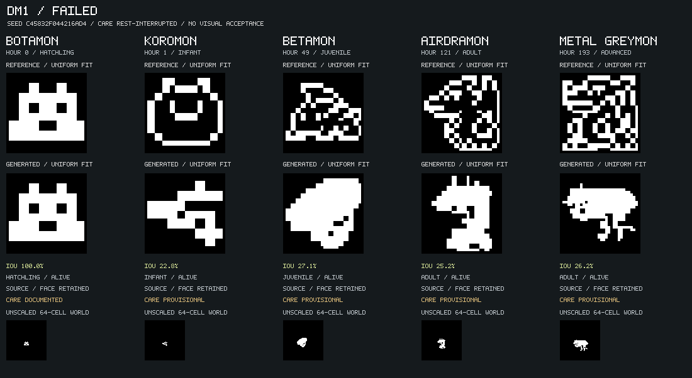

Run rest-policy-probe. 1 complete reference paths; 1 bounded seed/care trials. 1 failed, 0 unscored, 0 machine candidates, 0 visually accepted.
Each generated row uses one starting drawing, ordinary seed and concrete gameplay commands. Future reference bitmaps are used only for scoring. Alignment permits translation and uniform scale; it does not rotate, mirror, warp or independently reshape stages. The weakest stage controls the path score.
Targets can expose existing engine limitations. A failed bounded search is not a proof that no possible seed exists. Missing targets and undocumented care remain unverified. Current gameplay uses the combined V1-style clock; original Tamagotchi timing is not reproduced by these labels. Even a machine candidate requires actual-image review and cannot establish hardware parity.
failed
Seed c45832f044216ad4; care rest-interrupted; worst-stage silhouette IoU 22.8%.

| Stage | Actual game | IoU | Care evidence | Gate |
|---|---|---|---|---|
| Botamon | hatchling | 100.0% | documented | machine-candidate |
| Koromon | infant | 22.8% | provisional | failed |
| Betamon | juvenile | 27.1% | provisional | failed |
| Airdramon | adult | 25.2% | provisional | failed |
| Metal Greymon | adult | 26.2% | provisional | failed |